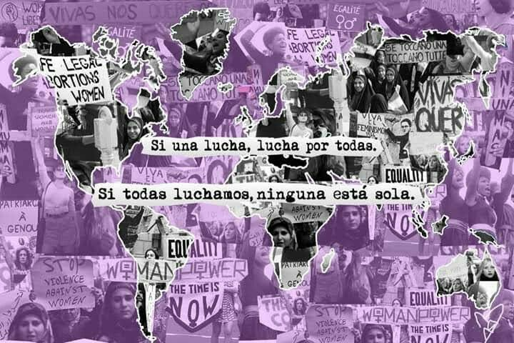

Luchas Femeninas por Derechos Politicos y por el Sufragio

Antecedentes
- El acceso de las mujeres a la educación era muy limitado, cuando se permitió fue con el proposito de mejorar sus funciones como
madres y esposas
- Las mujeres indigenas y campesinas enfentaban una doble discriminación por su genero y su origen etnico
Acontecimientos Significativos
- En 1889 se creó la Escuela Normal para profesoras
- Se les permitio el trabajo pero recibian salarios inferiores y eran victimas de explotación
Logros alcanzados
- A finales del siglo XIX surgieron clubes femeninos y periodicos dirigidos por mujeres que exigian educación, trabajo digno y
derecho al voto
- La mayoria de los derechos políticos y sociales de las mujeres comenzaron a reconocerse durante el siglo XX